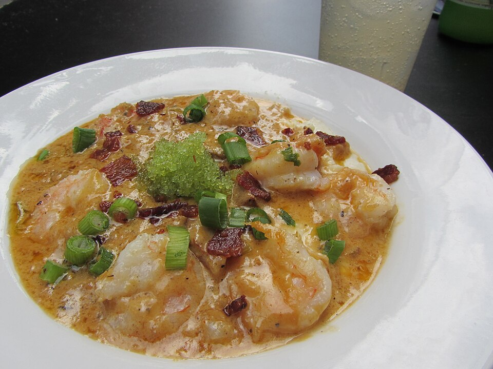

From-Scratch Coastal Roots
We never cut corners. Our stocks simmer for hours, our remoulade is whisked fresh each morning, and our stone-ground grits are cooked low and slow with aged cheddar and sweet cream.
Explore Seafood Sourcing →Welcome to Southern Pecan Gulf Coast Kitchen, located at 6706-C Phillips Place Court in Charlotte’s SouthPark district. Drawing inspiration from New Orleans, coastal Alabama, and the Carolina Lowcountry, our kitchen crafts authentic regional classics from scratch daily—from Charleston shrimp and creamy stone-ground grits to dark-roux seafood gumbo, blackened redfish, and our signature warm Southern pecan pie.

Every broth, roux, and pastry crafted by hand daily in SouthPark.
We never cut corners. Our stocks simmer for hours, our remoulade is whisked fresh each morning, and our stone-ground grits are cooked low and slow with aged cheddar and sweet cream.
Explore Seafood Sourcing →Built upon a patient 45-minute hand-stirred flour and oil roux, our gumbo is laden with wild Gulf shrimp, lump crabmeat, tender okra, and smoked andouille sausage over rice.
Discover Gumbo Craft →Our culinary namesake. Baked daily with toasted whole Georgia pecans, rich brown sugar butter custard, and flaky pastry crust, served warm with vanilla bean ice cream.
View Dessert Menu →Join us for leisurely lunch or dinner seven days a week. Complimentary plaza surface parking and valet available in Phillips Place.
Hours, Courtyard & Private Dining →